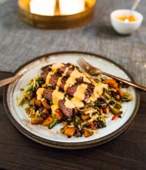

Flankstek med nudelwok och srirachamajjo
För: 4 personer
Flankstek:
- 500g flankstek
- 1/2 lime
- chiliflakes
- salt, peppar
Nudelwok:
- 1 gul lök
- 900g frysta wokgrönsaker
- salt, peppar
- 2-3 msk sesamolja
- 1 paket risnudlar (á 180g)
Sirarchamajo:
- 0,5 dl srirachasås
- 1 dl majonnäs

- Hacka löken och stek den mjuk på medelvärme i en stekpanna med lite olja. Ha ner wokgrönsakerna och stek dem så de får fin färg och blir klara – tinar du dem innan går det ännu fortare. När grönsakerna börjar torka till, slå på sesamoljan. Smaka av med salt och peppar. Koka nudlarna enligt anvisningen på förpackning. Häll av vattnet och blanda ner nudlarna med wokgrönsakerna i stekpannan. Stek ytterligare någon minut.
- Hetta upp en stekpanna riktigt varmt och ha ner flanksteken tillsammans med en klick smör. Stek på båda sidor så den får yta, dra sedan ner värmen och låt den gå klart. Pressa över lime och dra över salt och peppar under stekningen. Här flanksteken är klar, lyft ur den ur stekpannan och paketera in den i aluminiumfolie. Låt den vila i 10-15 minuter och skiva sedan upp den i centimetertjocka skivor som du skär rakt över fiberriktningen.
- Rör ihop srirachasås med majonnäs och smaka eventuellt av med en liten nypa salt om det behövs. Servera gärna med saltrostade frön.